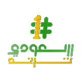

حلول سعودي ترند
أنظمة تشغيل داخلية تجمع المطاعم والعيادات والنوادي الرياضية والأبحاث الميدانية في بوابة واحدة.
RESTAURANTS
المطاعم
تشغيل المطاعم والكافيهات من لوحة واحدة.دخول البوابة
CLINICS
العيادات
إدارة عيادات الأسنان والمواعيد والملفات الطبية.دخول البوابة
GYMS
النوادي الرياضية
اشتراكات الأعضاء والجداول والتشغيل اليومي للنادي.دخول البوابة
FIELD RESEARCH
الأبحاث الميدانية
نظام الباحث الميداني وتجميع التقارير.دخول البوابة
سعودي ترند — بوابة الأنظمة الداخلية